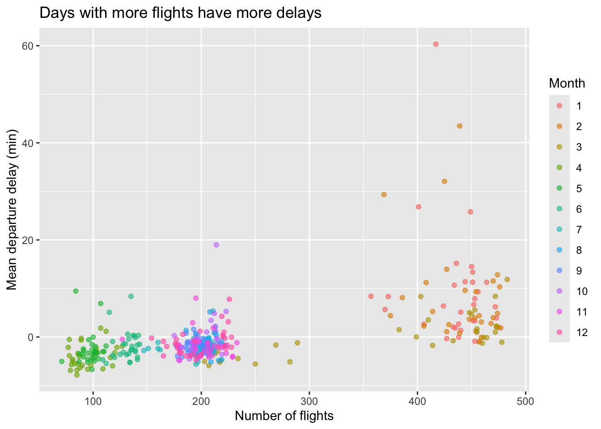

mutate(flights, avg_speed = (distance/air_time)*(60))Lab: Flights
Instructions
You will be submitting a merged PDF which combines a Conceptual Section PDF with a Coding Section PDF. Each of these PDFs has different requirements. Be sure to read the Lab Submission Guidelines on Ed.
Lab: Flights is due Monday, July 1 at 12pm on Gradescope.
The dataset:
This lab focuses on a dataset containing all departing flight information from the Bay Area’s two biggest airports: SFO (San Francisco International Airport) and OAK (Oakland International Airport) during the year 2020. There are a lot of interesting variables in this dataset which can be used to do some really neat descriptive statistics! Note also that 2020 marked the start of the larger COVID-19 epidemic in the United States.
The dataset is named flights and is located within the stat20data package. You can run the line ?flights to gain access to a data dictionary which gives more information about what each column (variable) represents.
Conceptual Questions
Question 1
What is the unit of observation in this data-set?
Question 2
Come up with:
- one descriptive claim,
- one generalization,
- one causal claim, and;
- one predictive claim
which you could pose using the variables in this data-set.
Question 3
Write down some variables whose data types in the Taxonomy of Data are ambiguous to you (may have more than one type).
Question 4
Then, pick one of the variables you wrote down and sketch (pen and paper/tablet) two visualizations:
- one featuring that variable as one data type
- one featuring that variable as another data type.
Make the sketches according to what you think the distribution of the variable looks like. Write down the aesthetic mapping(s) and geometry of the plot.
Question 5
I created a new data frame from flights which contains an additional column called avg_speed: which denotes the average speed flown at for each flight, measured in miles per hour.
I did this with the following code, starting from the original flights dataset loaded into R.
I then attempted to find the six (on average) fastest flying flights in descending order using the following code. The head() function prints out the first six rows of the data frame from the previous pipeline step and is correctly used here. The call to arrange() is nested inside of the call to head().
head(arrange(flights, desc(avg_speed)), n = 6)However, I received an error and the code would not run.
Explain the origin of this error and describe how you could modify the two lines of code above to solve the issue.
Question 6
What dplyr function could I use along with the code of Question 5 to display only the avg_speed and tailnum (tail number of the plane) columns?
Coding Questions
Question 7
Recreate the two visualizations you sketched in Question 4 using ggplot2.
Question 8
Create a histogram showing the distribution of departure delays for all flights, setting the limits of the x-axis to focus on where most of the data lie.
Add a text annotation somewhere on the plot that explains the meaning of a negative departure delay.
Finally, describe in words the shape and modality of the distribution.
Question 9
I attempted to find some summary statistics on the arrival delay of flights, grouped by their airline carrier. You can find the mininmum and maximum of numerical variables using the min() and max() function, respectively. This is the code that I ran.
However, I received an error and the code would not run.
Explain the origin of this error, then modify/correct the code and run it to display the output I was hoping to acheive. Hint: try running pieces of the dplyr pipeline rather than the entire pipeline at once.
Question 10
Based on your description in Question 8, calculate a measure of spread and center for this distribution.
Question 11
How many more flights left both SFO and OAK airports in April 2020 than in March 2020?
Question 12
What proportion of flights left on or ahead of schedule?
For OAK and SFO separately, what proportion of flights left on or ahead of schedule?
Question 13
Add a new, logical variable to the flights dataset which records TRUE if a flight took place during or before March 2020 or FALSE otherwise. Then, use this as a second grouping variable and repeat the second part of the previous question. Describe your result.
Question 14
Using the airport nearest your hometown, which day of the week and which airline seems best for flying there from San Francisco? If you’re from near SFO or OAK or from abroad, use Chicago as your hometown. Be clear on how you’re defining best.
Hint: There is no explicit weekday column in this data set, but there is sufficient information to piece it together. The following line of code can be added to your pipeline to create that new column. Note also that it uses functions which are contained in the lubridate package.
mutate(day_of_week =
wday(ymd(paste(year, month, day, set = "-")),
label = T))Question 15

Form a single pipeline which uses both dplyr and ggplot2 code to create the above plot, starting with the initial flights dataset. Hint: What does each point on the plot represent; is it the same as the unit of observation of the initial dataset?
Question 16
Examine the association between departure delay in two ways:
- Calculate the correlation coefficient between the two variables.
- Create a plot featuring these two variables.
Based on the information yielded by the numerical and visual summary you made, comment on whether it is suitable to fit a linear model between these two variables.
Question 17
Regardless of your answer to the previous question, do fit a linear model between departure delay and arrival delay and report the coefficients of the line. Write out the equation of the line using these coefficients.
Question 18
Which flight has the highest arrival delay given its departure delay?